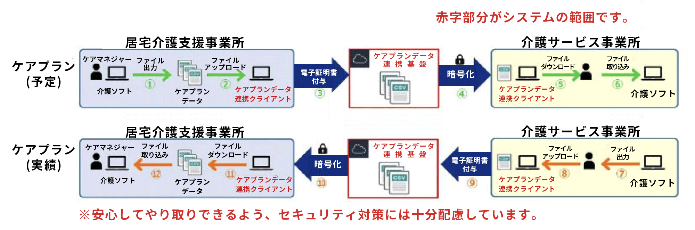

介護の現場
ペーパーレス、デジタル化が
進む介護現場
令和５年から令和６年にかけて、介護事業所の運営業務に大きな影響を及ぼす法改正・法の施行が目白押しです。
令和５年には「ケアプランデータ連携」、「インボイス制度」、令和６年は「電子帳簿保存法」の義務化や「介護報酬改定」と「訪問看護オンライン請求」の開始が控えています。
その多くがオンラインへの移行による業務効率化が主な目的です。紙媒体で行う業務は年々減少し、ネットワークを活用したサービスが主流になってきています。
令和５年〜令和６年
介護事業所に関わる
制度スケジュール

スムーズにオンライン業務へ移行するために、
最新の介護ソフト「カナミッククラウドサービス」を
導入することをおすすめします。
カナミッククラウドを
導入すると・・・？
令和５年〜令和６年
介護事業所に関わる制度の
概要とポイント
令和５年４月スタート
ケアプラン
データ連携システムとは？
令和５年(2023年)4月から本格的に開始した、事業所同士がケアプランのやり取りをクラウド上で行う仕組みのことです。
ケアプランデータ
連携システムで期待される効果
- 記載時間・転記誤りの削減
- 文書量の削減
-
文書の送付費用
(印刷・郵送代、交通費等)の削減
居宅介護支援事業所と介護サービス事業所の間で毎月やり取りされるケアプランのうち、サービス提供票(予定・実績)をデータ連携するための標準仕様が公開されました。
標準仕様を活用してデータ連携をすることで、介護事業所の文書作成に要する負担が大幅に軽減されることが期待されています。
ケアプラン連携の
業務フロー

⚫︎出典：公益社団法人国民健康保険中央会「(資料１)ケアプランデータ連携システムチラシVer.2」
異なる介護ソフトとの
ケアプランデータ連携は
カナミックだけでも可能！
カナミックはデータ連携に強いクラウドサービスです。「異なる介護ソフト間でのケアプランデータ連携」にも対応しています。カナミックユーザー様の連携先は無料でカナミックの連携機能を利用できるため、ユーザー様・連携先どちらも連携のための別途費用がかかりません。
令和５年１０月スタート
インボイス制度とは？
(適格請求書等保存方式)
令和５年(2023年)10月１日から、消費税の仕入税額控除の方式としてインボイス制度が開始されます。インボイス制度が施行されると、消費税の仕入税額控除を受けるためには、インボイス（適格請求書）の保存が必要になります。
⚫︎出典：国税庁パンフレット「適格請求書等保存方式の概要」
新電子帳簿保存法では、電子取引規制が厳格化されます。要件を満たさない当該国税関係帳簿書類等については税法の規定の適応を受けられません。
また、税務調査において当該保存データは隠蔽・改ざんと見なされ追徴課税や重加算税が課せられるリスクがあります
介護事業者にとっての
インボイス制度
多くの介護事業者は免税事業者であるため、インボイス制度は関係ないと思うかもしれません。しかし、取引先に課税事業者がいる場合や自費サービスを行っている事業所の場合などは経理業務に影響を及ぼす制度です。
令和６年１月スタート
新・電子帳簿保存法とは？
令和６年(2024年)1月１日から、電子帳簿保存法の改正版が施行されます。令和３年度(2021年)税制改正において帳簿書類を電子的に保存する際の手続き等について抜本的な見直しがされました。
⚫︎出典：国税庁「電子帳簿保存法が改定されました(令和３年１２月改訂)」
新電子帳簿保存法では、電子取引規制が厳格化されます。要件を満たさない当該国税関係帳簿書類等については税法の規定の適応を受けられません。
また、税務調査において当該保存データは隠蔽・改ざんと見なされ追徴課税や重加算税が課せられるリスクがあります。
令和６年４月スタート
介護報酬改定の
ポイントは？
令和６年度(2024年度)の介護保険制度の改正論議について、令和４年(2022年)12月に社会保障審議会、介護保険部会から公表されました。通所介護と訪問介護を組み合わせた新サービスの創設など、いくつかの新規案件が盛り込まれており、今後以下のスケジュールに沿って進行していく予定です。
【24年介護報酬改定の骨子】
I.地域包括ケアシステムの深化・推進
- １）生活を支える介護サービス等の基盤の整備
- ２）様々な生活上の困難を支え合う地域共生社会の実現
II.介護現場の生産性向上の推進、制度の持続可能性の確保
- １）介護人材の確保、介護現場の生産性向上の推進
- ２）給付と負担
スケジュール案
- ＜令和５年＞
-
６月～夏頃 ：主な論点について議論
９月頃 : 事業者団体等からのヒアリング
10～12 月頃 ：具体的な方向性について議論
12 月中 ：報酬・基準に関する基本的な考え方の整理・とりまとめ
※地方自治体における条例の制定・改正に要する期間を踏まえて、基準に関しては先行してとりまとめを行う。
令和６年度政府予算編成 - ＜令和６年＞
- １月頃 介護報酬改定案 諮問・答申
⚫︎出典：社保審－介護給付費分科会 第 221 回（R5.8.7） 参考資料１
令和６年６月分〜スタート
訪問看護オンライン請求とは？
これまで紙出力で運用されてきた訪問看護(医療保険分)のレセプト請求をオンラインで行う仕組みのことです。
令和６年(2024年)６月分より義務化され、原則紙での請求はできなくなるため、今のうちにオンライン請求の準備を整えておく必要があります。